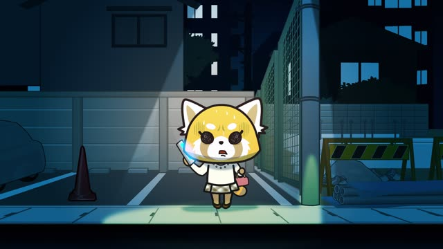

と (Quotation)
| Polite | ～と思います |
|---|---|
| Casual | ～と思う neutral ～って思う spoken, very common |
Same meaning: quoting a thought. って is the spoken casual と.
Midnight Diner: Tokyo Stories · Season 2, Episode 8
兄貴、喜ぶと思います。
"I think my brother would be happy."
と closes off what someone thinks or says. The thought goes first, then と, then 思う (think) or 言う (say): 喜ぶ + と + 思います.
On this card, it answers "What do you think?": that he'd be glad. After a verb or い-adjective, just と (喜ぶと思う). After a noun or な-adjective, add だ before と (いい人だと思う).
と works in polite and casual speech. In casual talk it often turns into って.
When Marnie Was There
よかった、どこへ行ったのかと思った。
"Phew, I was wondering where you'd gone."
Casual: と + 思った, no ます. The thought here is a question, どこへ行ったのか, "where did she go?".
Noun or な-adjective before it? Add だ first.
| Word | Add | Ending | ||
|---|---|---|---|---|
| Noun | 学生 | だ | と思う | I think he's a student |
| な-adjective | 静か | だ | と思う | I think it's quiet |
| Verb | 行く | – | と思う | I think he'll go |
| い-adjective | 高い | – | と思う | I think it's expensive |
Quick Examples
A friend asks about the new ramen place.
おいしいと思う。
"I think it's good."
CasualPassing on what the teacher said.
先生は、明日テストがあると言いました。
"The teacher said there's a test tomorrow."
What was said goes before と, who said it goes up front with は.
PoliteLooking at dark clouds.
明日は雨だと思います。
"I think it'll rain tomorrow."
雨 is a noun, so だ comes before と. Same with な-adjectives: 静かだと思う.
PoliteTelling a friend why Tanaka-san isn't here.
田中さん、来ないって言ってたよ。
"Tanaka-san said they're not coming."
Casual: って instead of と.
CasualWith and without
雨です。
It's raining. A plain fact.
雨だと思います。
I think it's raining. Now it's just my guess: と wraps up "it's rain", 思います says I think it.
Examples from Media

NHK News Web Easy · article
気象庁は、建物の外にいるのはとても危ないと言いました。
"The weather agency said being outside a building is very dangerous."
Who said it: 気象庁は. What they said: everything up to と.
Goblin Slayer · Episode 12
そのほうがカッコいいと思いますよ。
"I think it looks cooler that way."
い-adjective + と思います, no だ needed.

Aggretsuko · Season 2, Episode 1
はいはい、たぶんまだ中にいると思います。
"Yes, yes, I think he's probably still inside."
Verb + と思います. たぶん = probably.

Shirokuma Cafe · Season 1, Episode 12
動物との結婚生活は、難しいと思うよ。
"I think married life with an animal would be hard."
難しい is an い-adjective, so no だ: straight into と.

YouTube · video
別に、多機能なエアコンだと思わないんだよ。
"I don't think it's a particularly fancy air conditioner."
"I don't think": the negative goes on 思う (思わない), not on the thought.

YouTube · video
今の撃たれたよね。パチンって言ったもんな。
"We just got shot, right? It went 'bang'."
Sounds get quoted too: パチンって言った, "it went pachin".
Samurai Champloo · Episode 2
醜いと言う。
"They say it's ugly."
と marks what is said.

Shirokuma Cafe · Episode 21
ムリだと思うんだよね。
"I just don't think it's possible."
Your thought, then と思う.
Further Reading
A Dictionary of Basic Japanese Grammar
Entry "to³" (quote marker) · pp. 478–480
Entry "-tte²" (quote marker) · pp. 510–511
Tae Kim's Guide to Japanese Grammar
Acting on relative clauses · The interpreted quote
Acting on relative clauses · Using 「って」 as a casual version of 「と」